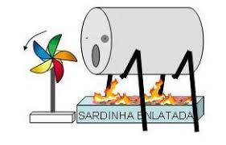

O experimento do nosso grupo consistiu em fazer uma ventuinha girar usando a energia do calor abaixo dela. Esse é um dos modos que é produzido energia termo-eletrica, só que em uma proporção muito menor e sem o aparelhamento magnetico necessário.